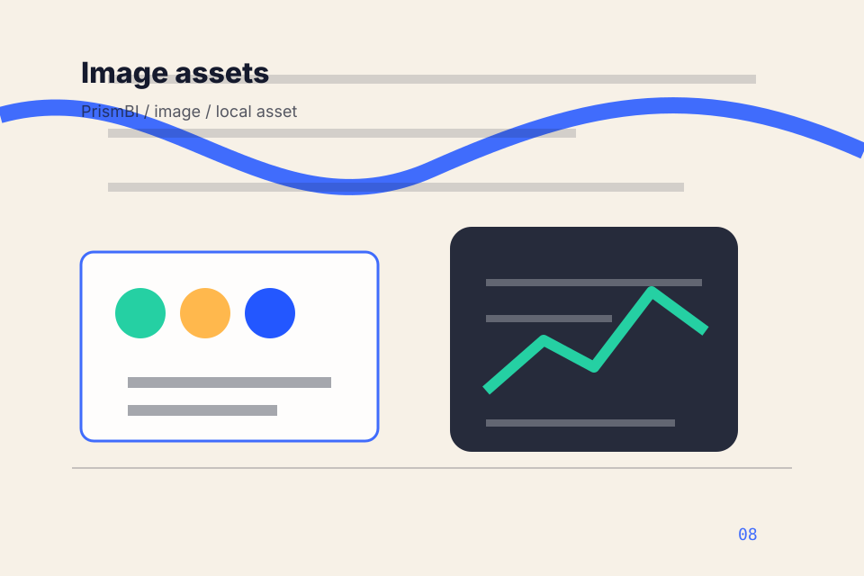

<!-- Source partial: Metadata dashboard hero. -->
<section id="section-hero" class="section hero-section hero-metadata-dashboard-hero composition-metadata-dashboard-hero" data-section="Hero" data-composition="Metadata dashboard hero" data-hero-type="Metadata dashboard hero" data-track="section_home_hero">
  <div class="container hero-grid">
    <div class="hero-copy">
      <p class="eyebrow">Home / 01</p>
      <h1>PrismBI</h1>
      <h2>A data catalogue experience with friendly dashboards, metadata proof, search panels, and AI-context positioning</h2>
      <p class="lead">PrismBI brings analytical decision clarity guidance to the opening route, with practical context for data, analytics &amp; business intelligence decisions and a clear route to the next step.</p>
      <p>PrismBI connects the opening route with practical proof, useful comparisons, and the questions data, analytics &amp; business intelligence visitors bring to the page. Visitors can scan the essentials, understand the tradeoffs, and decide whether to plan dashboard or keep exploring. The rhythm is built for action without removing the context people need to trust the decision.</p>
      <div class="button-row">
        <a class="button primary" href="../contact.html" data-track="cta_home_hero">Plan Dashboard</a>
        <a class="button secondary" href="https://ash-tra.com/discovery/" data-track="secondary_home_hero">Discuss build</a>
      </div>
      
      <div class="hero-proof" aria-label="Trust notes">
        <span>System map</span><span>Evidence trail</span><span>Support route</span>
      </div>
<div class="container signature-panel signature-dashboard" data-signature="dashboard" data-page="home" data-section-key="hero">
    <div>
      <p class="eyebrow">Metadata dashboard hero</p>
      <h3>Focus the dashboard</h3>
      <p>Select a path and PrismBI keeps the next step, proof, and follow-up expectation aligned with decision clarity and visibility.</p>
    </div>
    <div class="signature-controls" role="group" aria-label="Dashboard tabs, KPI filters, tool stack selector">
      <button type="button" data-option="map" aria-pressed="true">Map</button><button type="button" data-option="filter" aria-pressed="false">Filter</button><button type="button" data-option="validate" aria-pressed="false">Validate</button>
    </div>
    <output data-signature-output aria-live="polite">Map route selected for PrismBI.</output>
  </div>
    </div>
    <figure class="hero-media target-media target-kind-data target-profile-atlan">
      <div class="target-stage target-data target-profile-atlan" aria-hidden="true">
  <div class="app-chrome"><span></span><span></span><span></span><b>PrismBI</b></div>
  <div class="app-board"><section><h4>Problem</h4><ul><li><span>DATA-80</span>Problem</li><li><span>ANALYTICS-81</span>Blindspots</li></ul></section><section><h4>Blindspots</h4><ul><li><span>ANALYTICS-80</span>Blindspots</li><li><span>BUSINESS-81</span>Promise</li></ul></section><section><h4>Promise</h4><ul><li><span>BUSINESS-80</span>Promise</li><li><span>INTELLIGENCE-81</span>Dashboards</li></ul></section></div>
</div>
      <picture>
        <source media="(max-width: 640px)" srcset="../assets/images/hero/data-analytics-home-hero-mobile.svg">
        <source media="(max-width: 1024px)" srcset="../assets/images/hero/data-analytics-home-hero-tablet.svg">
        
      </picture>
      <figcaption>Data catalogues, lineage graphs, metadata workspaces expressed through a custom static visual system.</figcaption>
    </figure>
  </div>
</section>
